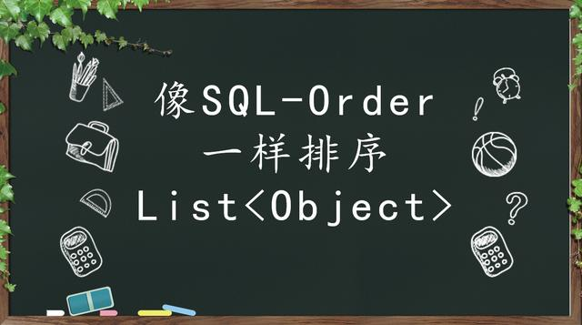
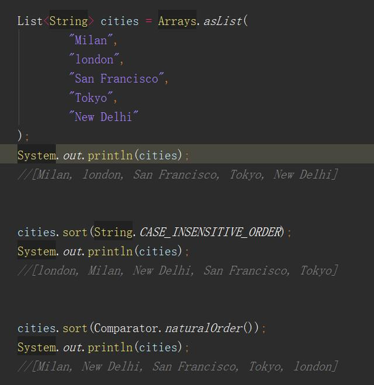
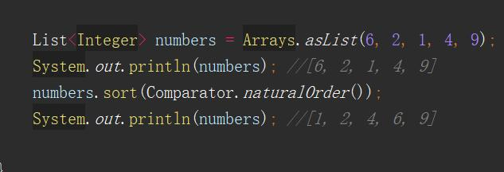
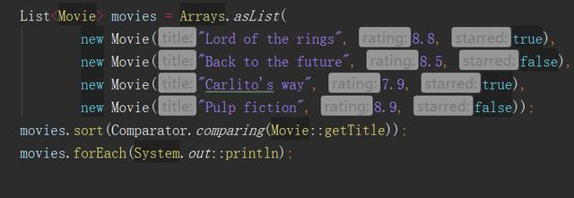
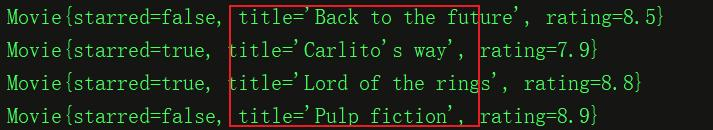
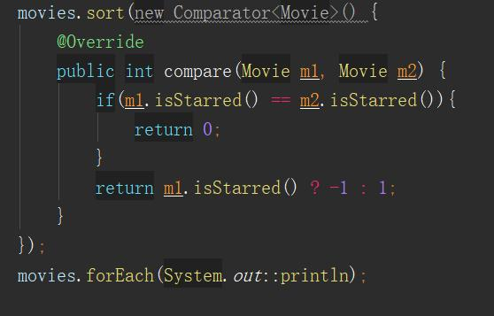
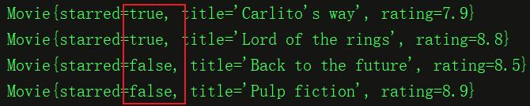
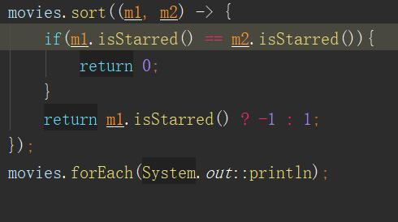
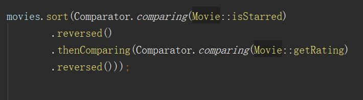
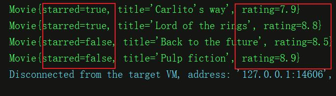

在开始之前，我先卖个关子提一个问题：假设我们有一个Movie类，这个类有三个成员变量分别是starred(是否收藏), title(电影名称), rating(评分)。你知道怎么对一个Movie对象组成的List集合，先按照是否收藏字段倒序排序，再按照评分的倒序进行排序么？如果您不知道4行代码以内的解决方案（其实是1行代码就可以实现，但笔者格式化为4行），我觉得您有必要一步步的看下去。
在java 8 之前，实现对象Collection排序，集合中被排序和比较大小的对象得实现Comparable接口。在java 8之后，有了Comparator比较器的概念，使用Comparator完成对象数组的排序更加方便快捷，下面就给大家简单的介绍一下java 8中使用Comparator排序的方法。

在java 7我们是使用Collections.sort()接受一个数组参数，对数组进行排序。在java 8之后可以直接调用集合类的sort()方法进行排序。sort()方法可以传入一个字符串的排序规则，如：String.CASE_INSENSITIVE_ORDER，也可以传入一个排序器Comparator.naturalOrder()作为参数。

按数字的自然顺序排序，结果是[1, 2, 4, 6, 9]
这个功能就比较有意思了，举个例子大家理解一下。假设我们有一个类Movie，有三个成员变量分别是starred(是否收藏), title(电影名称), rating(评分)。


我们自定义一个排序器，实现compare函数。返回0表示元素相等，-1表示前一个元素小于后一个元素，1表示前一个元素大于后一个元素。这个规则似乎和java 8之前没什么区别。

最终的打印结果如下，按照started的自定义规则进行排序。

这段代码如果以lambda表达式简写。箭头左侧是参数，右侧是函数体，参数类型和返回值根据上下文自动判断。如下：


上面这段代码先是按是否收藏的倒序排序，再按照电影的评分大小的倒序排序，排序结果如下：
